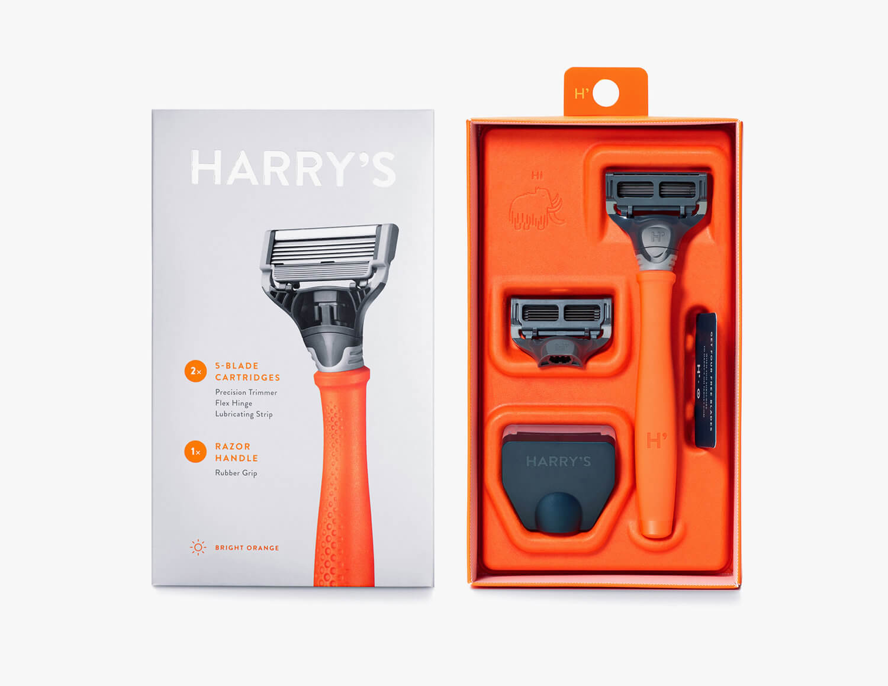
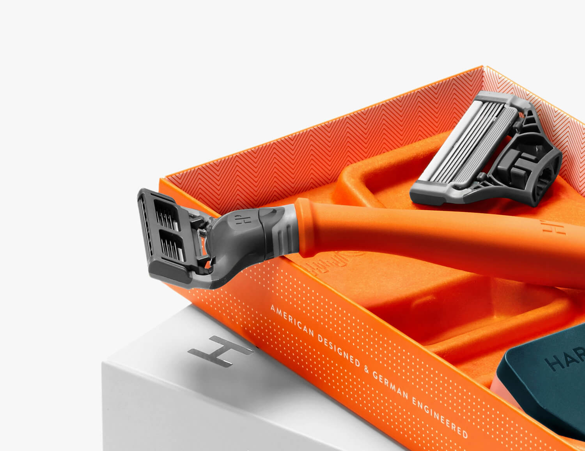
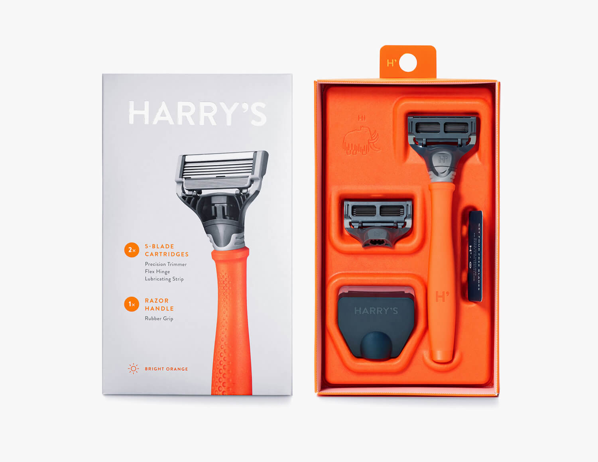
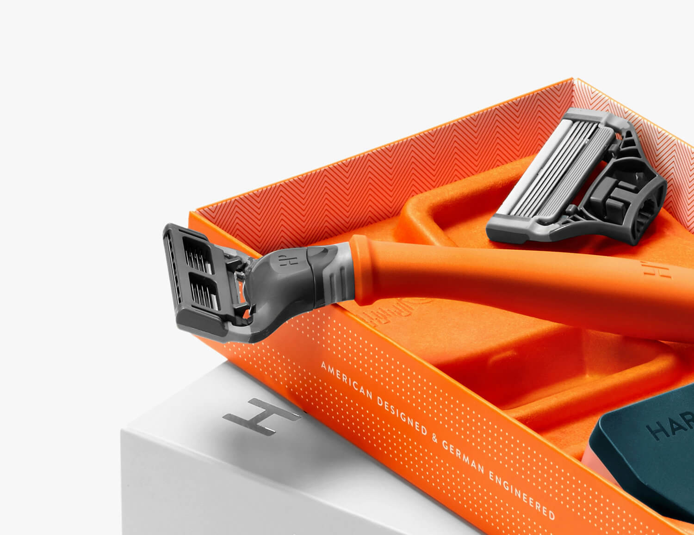

How Long
A Story of Land, Legacy, and Resistance
How Long is an intimate short documentary profiling a 79-year-old man who has dedicated over five decades to caring for a small piece of land in Umlazi U-Section—a space that, through his hands and heart, has transformed into a beloved community park. The land, affectionately known as How Long, holds a deep symbolic meaning born out of the apartheid era—a quiet protest in the form of preservation, asking: “How long will we suffer as Black people?”

Narrative Focus
This is a story of one man and one space—but it’s also the story of endurance, reclamation, and quiet activism. Through soft-spoken reflections and visual textures of the park today, the documentary explores how the space became a symbol of hope and healing in a township historically shaped by systemic neglect.
The park is more than just trees and benches—it’s living history. And its caretaker, with his gentle pride and weathered hands, becomes a vessel of memory, speaking not only of the past but to the future of community-led preservation.
Key Elements
- ★ Portrait-style documentary storytelling
- ★ Interweaving themes of land, memory, identity, and protest
- ★ A reflection on apartheid’s legacy through a personal, place-based lens
- ★ Use of the environment (park) as a character in itself

Outcome
How Long is a tribute to ordinary people who become extraordinary through service to their community. The film has been screened at local storytelling events and is currently being submitted to festivals. It stands as a visual ode to heritage, reminding us that sometimes the quietest gestures—like tending a patch of land—are the loudest acts of resistance.
 
